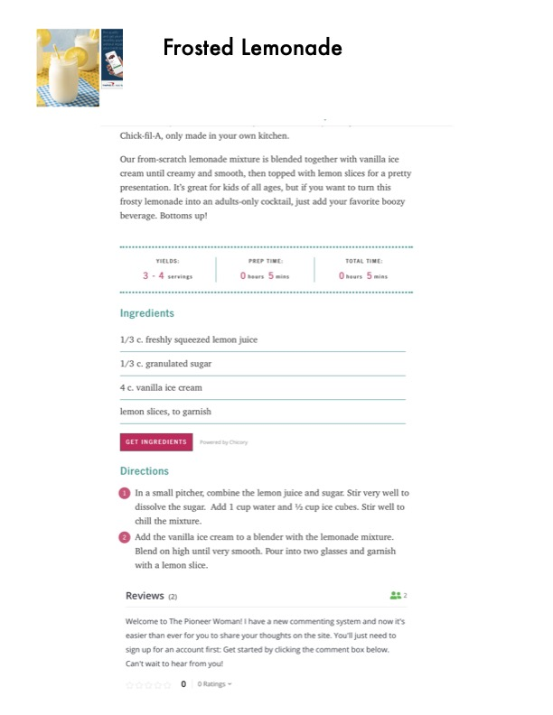

Frosted Lemonade

Original cookbook page 196
Chick-fil-A, only made in your own kitchen. A from-scratch lemonade mixture is blended together with vanilla ice cream until creamy and smooth, then topped with lemon slices for a pretty presentation. Great for kids of all ages, but if you want to turn this frosty lemonade into an adults-only cocktail, just add your favorite boozy beverage.
Prep: 5 minutes • Total: 5 minutes
Ingredients
- 1/3 c. freshly squeezed lemon juice
- 1/3 c. granulated sugar
- 4 c. vanilla ice cream
- Lemon slices, to garnish
- 1 cup water
- ½ cup ice cubes
Instructions
- In a small pitcher, combine the lemon juice and sugar. Stir very well to dissolve the sugar. Add 1 cup water and ½ cup ice cubes. Stir well to chill the mixture.
- Add the vanilla ice cream to a blender with the lemonade mixture. Blend on high until very smooth. Pour into two glasses and garnish with a lemon slice.
Recipe #196 from collection